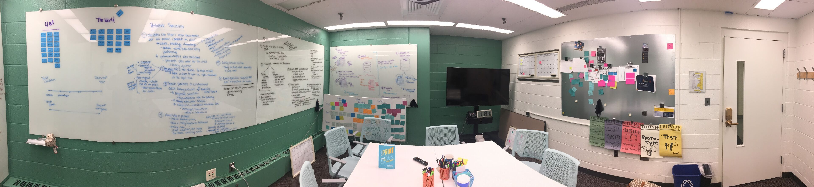
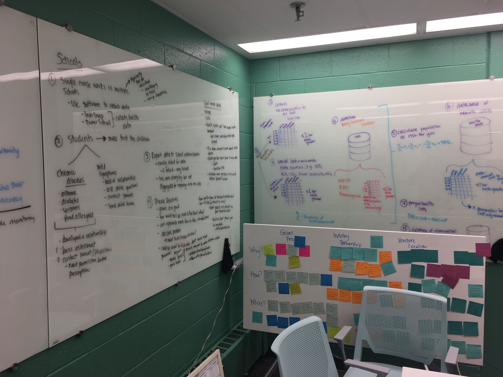
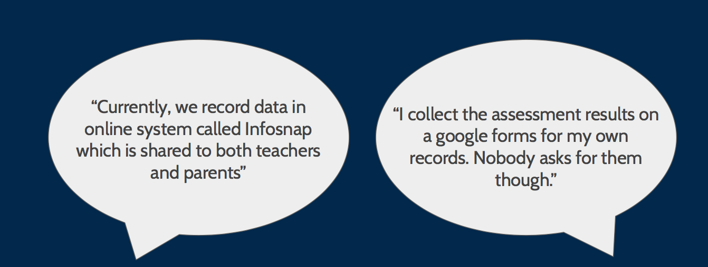
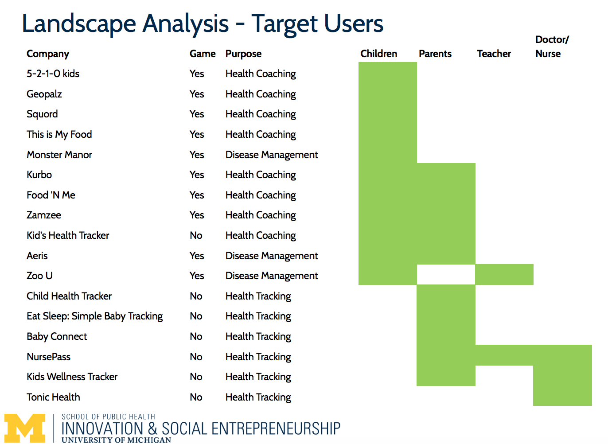
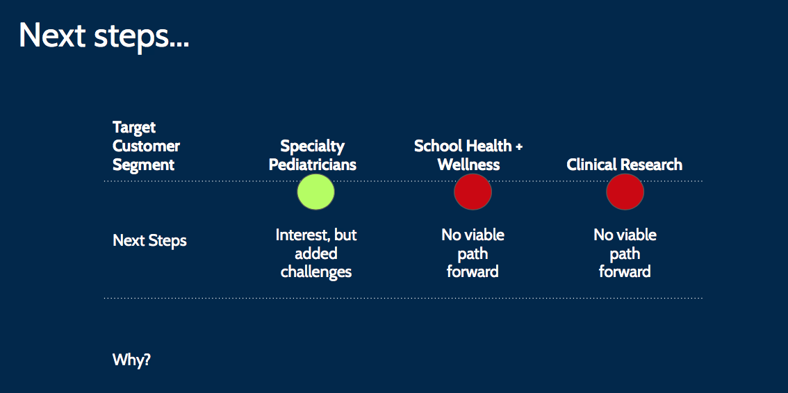

UX Strategy at Disease Detectives
Imagine a game for kids which allows them to share their personal health data to hospitals (and parents) in a fun and interactive way? Is the idea worth moving forward? Let’s find out!
Background
I was introduced to this project in its mid stage. The idea was the following, “Getting children to give their health data to their parents or doctors is very difficult. By proposing a game like application idea to share personal health data to parents and other stakeholders, our client was very keen to go ahead with this idea.
In its first phase the client had interviewed around 60 stakeholders comprising of parents and medical services. This time, however, client wanted to expand horizons to other stakeholders including school nurses, pediatricians and clinical researchers. My role was to handle research for school administrators and nurses.
Hypothesis
Even though key goals of this project were already defined, we had to come up with different hypothesis for each stakeholders. To do this task, we brainstormed potential goals for each stakeholders (schools, clinical researcher, pediatricians) and used zen to reach final list of hypothesis. Since my role was mostly related to managing school’s stakeholders, following hypothesis question marked the beginning of our user research -
“School nurses would be better able to respond to the health needs of students if data collection/analysis were more efficient and involved direct input from children.”
This hypothesis was validated against school admins, nurses and health workers. I was really excited since it was an opportunity for me to bring my previous experience in educational technology and working with schools in this research.
Methods
Since we had to identify potential gaps as well as identify the need for “innovative” data collection methods in education space, we divided our research into competitive analysis and qualitative interviews. Our research answered several questions including -
- What are existing applications that are used to interface school kids and other stakeholders in interactive way?
- What is the existing state of data collection in public schools? What challenges (if any) do nurses face while collecting data from children?
- Where does the problem lie? In data collection or standardization?
Naturally, qualitative method was useful in answering last two questions while competitive analysis was useful in answering the first.
Conducting Research
Conducting the research involved figuring out all kinds of logistics as well as participant demographics. For participants, we had brainstormed list of potential stakeholders that could be useful for our research which included -
- School admins: Since they are in charge of managing health records for every students.
- School nurses:They are directly in contact with the kids. It would be useful to have first hand experiences with the kids.
- Health Workers: These people aren’t necessary directly associated with the kids, but have experiences in handing and managing health related information in the schools.
Since we were short on budget and time, recruiting the right participants was key. By focussing on average users, we were able to identify right stakeholders in our study. Moreover, we decided to recruit via email since we had easy access to email lists for our participants.
Interviews
In order to conduct our interviews, we came up list of potential questions that we want to address from our participants. These included questions addressing how their current system works, challenges faced in data collection and first reactions about our idea. Since, we are targeting schools both in and out of Ann Arbor, all of the interviews were conducted remotely.
Competitive Landscape Analysis
Finding state of existing system was crucial in strategizing whether this idea is worth moving forward. To achieve this, we conducted competitive analysis addressing wide range of competitors who are making interactive apps for nurses, children and parents.
Synthesizing Data
Making sense out of everything!
From our interviews we found that schools had sufficient data collection methods today. The challenge exists elsewhere (forex: training, not enough nurses etc.). Even though there first reaction to it was somewhere between positive and neutral, he actual need was not having interactive game like interface for data collection.
Notable quotes from users
Similarly, from our landscape analysis we found that majority of the health related apps were addressed towards children and parents while there was lack of any interactive game-like applications for nurses and doctors in schools which led to insight that there must be something that would be stopping teachers and nurses to work with such kind of apps.
Green color shows if that organization is catering to the that particular stakeholder
Recommendations and Next Steps
Our final recommendation to the client (in my case) included to not go ahead with the school health and wellness as the target customer segment for subsequent research. Instead, we focussed on doing more research on speciality pediatricians, who expressed some interest but mentioned some added challenges. The purpose of this study was to identify if schools are a viable option for this idea or not.